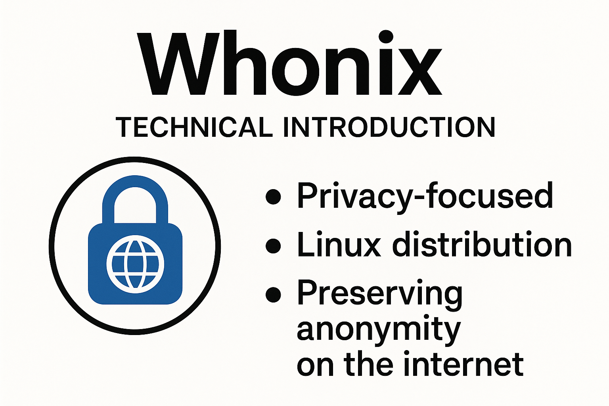

We believe security software like Whonix needs to remain Open Source and independent. Would you help sustain and grow the project? Learn more about our 14 year success story and maybe DONATE!
DesignDesignComparison with KicksecurePrevious page: DesignIndex page: DesignNext page: Comparison with KicksecureTechnical Introduction

Introduction into Whonix Technical Design.
- Technical readers: This wiki page is intended for technical readers.
- Laymen users: Laymen users should read Whonix Overview instead.
Summary
Whonix aims to be safer than Tor alone. The primary goal is that no one can find out the user's IP, location, or de-anonymize the user.
Whonix consists of two Debian (Kicksecure) based (virtual) machines (VMs), which are connected through an isolated network.
- A) One machine acts as the client or Whonix-Workstation, running applications such as a browser; and
- B) the other as a proxy or Whonix-Gateway, which runs Tor and routes all Whonix-Workstation™ traffic through Tor.
All traffic originating from Whonix-Workstation™ and Whonix-Gateway™ is routed to the Tor software.
For technical details, click on "Learn More" on the right side.
- Traffic from Whonix-Gateway also routed over Tor: Starting
from Whonix version
0.2.1, traffic from Whonix-Gateway is also routed over Tor. This approach conceals the use of Whonix from entities monitoring the network. - Gateway's own traffic not essential for anonymity: To preserve the anonymity of a user's Whonix-Workstation activities, it is not essential to route Whonix-Gateway's own traffic through Tor. (Note: The gateway is mainly a tool that helps route traffic; it does not typically contain personal activity data.)
- DNS configuration on Whonix-Gateway has limited impact:
Altering DNS settings on Whonix-Gateway in
/etc/resolv.confonly impacts DNS requests made by Whonix-Gateway's applications that utilize the system's default DNS resolver. (DNS is like the internet's phonebook - it translates website names to IP addresses.) By default, no applications on Whonix-Gateway that generate network traffic use this default resolver. All default applications on Whonix-Gateway that produce network traffic (like apt, systemcheck, sdwdate) are explicitly configured, or forced by uwt wrappers, to use their dedicated TorSocksPort(refer to Stream Isolation). - Whonix-Workstation DNS requests handled via Tor:
Whonix-Workstation's default applications are configured to use
dedicated Tor
SocksPorts(see Stream Isolation), avoiding the system's default DNS resolver. Any applications in Whonix-Workstation not set up for stream isolation - such asnslookup- will use the default DNS server configured in Whonix-Workstation (through/etc/network/interfaces), which points to Whonix-Gateway. These DNS requests are then redirected to Tor'sDnsPortby the Whonix-Gateway firewall. (This ensures DNS lookups still go through Tor even if they use the default method.) Changes in Whonix-Gateway's/etc/resolv.confdo not influence Whonix-Workstation's DNS queries. - Tor process traffic allowed direct internet access: Traffic
produced by the Tor process, which by Debian's default operates under
the account
debian-torand originates from Whonix-Gateway, can access the internet directly. This is permitted because the Linux user accountdebian-toris exempted in the Whonix-Gateway Firewall and allowed to use the "regular" internet. (This is necessary for Tor to establish its connections.) - Tor mostly uses TCP traffic: As of Tor version
0.4.5.6(with no changes announced at the time of writing), the Tor software predominantly relies on TCP traffic. (TCP is a common protocol used for stable internet connections.) For further details, see Tor wiki page, chapter UDP. For DNS, please refer to the next footnote. - Tor's DNS independence and exceptions: Tor does not depend
on, nor use, a functional (system) DNS for most of its operations. IP
addresses of Tor directory authorities are hardcoded in the Tor software
by Tor developers. (That means Tor knows important addresses in advance
and doesn't need to look them up.) Exceptions include:
- Proxy with domain name: Proxy settings that use proxies with domain names instead of IP addresses.
- Pluggable transport domain resolution: Some Tor pluggable
transports, such as meek lite, which resolve domains set in
url=andfront=to IP addresses, or snowflake's-front.
This setup can be implemented either through virtualization and/or Physical Isolation (explained below).
To visualize this configuration, imagine physically computer A) having no direct internet connection (no Wifi, no modem, no cable, no DSL) and being connected by a LAN cable to a separate physical computer B). In such a setup by default, computer A) has no way to access the internet. Computer B), the proxy, can however opt-in to provide network access to computer A).
In this setup, how could computer A) get access to the internet? One way would be for computer B) to enable IP forwarding. Whonix does not do this by design. Another way would be for computer B) to run proxy software that opens port(s) (services) that computer A) can access. This is the core principle of what Whonix does.
Whonix comes with many security-enhancing and anonymity-protecting features.
Whonix provides reliable IP hiding. However, hiding your identity is harder than just hiding your IP. Merely hiding IP addresses is an outdated, year 1990 threat model. Simply masking the user's IP address is insufficient, as adversaries employ various Data Collection Techniques that do not require IP addresses. This is evidenced by numerous Browser Tests, such as the Fingerprint.com Demo, particularly since "12% of the largest 500 websites use Fingerprint.com".
To keep users anonymous, Whonix offers Full Spectrum Anti-Tracking Protection and is much safer than VPNs (refer to the comprehensive Whonix versus VPNs comparison).
Project activities include:
- Maintaining approximately ~ 16 Whonix source code repositories.
- and ~ 56 Kicksecure source code repositories.
Essentials
The basic assumption is, that all applications are untrustworthy. No application must be able to obtain the user's real external IP. Whonix ensures that applications can only connect through Tor. Direct connections (leaks) must be impossible. This is the only way we know of, that can reliably protect your anonymity from client application vulnerabilities and IP/DNS and protocol leaks. When the term protocol leak or "information leak" is used in the context of security and anonymity it is referring to an event that causes the release of secure or private information to an untrusted party or environment [1] [2].
The Whonix Concept (see below) is agnostic about everything, the anonymizer, platform, etc. See Whonix Framework below.
Whonix Example Implementation: Anonymity setup built around Tor, two virtual machines using Qubes, KVM, VirtualBox or physical isolation and Debian GNU/Linux. Whonix can be installed on every supported platform. (Supports Windows, OS X, Linux, BSD and Solaris.)
Physical Isolation describes installing Whonix-Gateway™ and Whonix-Workstation on two different pieces of hardware. It is more secure than VirtualBox / KVM virtual machines alone, requires more physical space, and hardware and electricity costs are higher. Keep in mind that you don't need very powerful dedicated servers or desktops. Unfortunately, using Qubes-Whonix™ with physical isolation is unsupported. For more information, see Physical Isolation.
See Design for Technical Design and security of Whonix. For security introduction, see below.
The listed Features, advantages and disadvantages shall give you an overview, what Whonix is useful for, what Whonix can do for you, and what not.
Technical Challenges
System security, privacy and anonymity are dependent upon sensitive information or data not escaping the trusted environment, which is protected and under the user's control. This is a technically challenging task with a multitude of elements to be considered. The numerous applications and background processes running on a system at any given time exacerbate the difficulties encountered.
Sensitive Information
In the context of privacy and anonymity, sensitive information is any information that can be used to identify an individual. An inexhaustive list of sensitive information includes:
- Hardware serials - can be used to uniquely identify a computer and in turn be linked to the person who purchased or was using it.
- DNS leak - if DNS queries are leaking, an ISP or any on-path eavesdropper can log the sites that are visited.[3]
- IP leaks - a user's external (ISP-facing) IP address can be used to identify an individual as well as their location.
- Personally identifiable information (PII) - information that can be used on its own or with other information to identify, contact, or locate a single person, or to identify an individual in context.[4].
Origin of Leaks
Even if sensitive data is only a very small proportion of the total, it is extremely difficult to block all available leak avenues. Information leaks have several primary causes:
- Misbehaving applications (buggy software) - programs that do not function as intended, leading directly to data leakage or causing other applications they interact with to leak.
- Deliberate (Backdoors) - a backdoor is a method, often secret, of bypassing normal authentication or encryption in a computer system, product, or embedded device (like a home router), or its embodiment which forms part of a cryptosystem, an algorithm, a chipset, or a "homunculus computer".[5]
- Mis-configured applications - some applications can leak sensitive information if configured improperly. For instance, VPN clients can leak DNS queries. Other applications that can be used to block information leaks, such as iptables, may be ineffective if configured improperly.
- Software vulnerability - a weakness which allows an adversary to reduce a system's integrity, availability, authenticity, non-repudiation and confidentiality of user data.[6][7]
Whonix Framework
The Whonix Concept is agnostic about everything. With some development effort you can replace any component. The Whonix developers would like to support each and any use case, but due to limited amount of developers this is impossible and we focus on the Whonix Example Implementation.
The Tor network is Whonix official and best supported anonymizing network. Whonix can also potentially and optionally use other anonymizing networks (Such as JonDo, I2P, Freenet, RetroShare), either in addition (tunneled through Tor) or as a replacement for Tor. See the article for more information.
You can also avoid using virtualization by using Physical Isolation without any virtualization, although that is not recommended, see Comparison of different variants for more information.
It is possible to use other virtualization platforms than VirtualBox, e.g. Qubes (which is based on XEN), VMware, KVM, XEN, QEMU, Bochs, etc. (See Dev/Other Virtualization Platforms.).
Other operating systems (e.g. Windows; *nix; BSD; etc.) can potentially be used as host and/or guest operating system. See the Other Operating Systems for more information.
Design
A robust "security by isolation" model is incorporated into the Whonix framework to counter the ever-present threat of information leaks. This model is composed of four (three when using physical isolation)[8] unique, but essential components.
- Hypervisor - also referred to as a virtual machine
monitor. This is software, firmware, or hardware that creates and runs
virtual
machines. Several elements are involved:
- The computer on which the hypervisor runs is called the host.
- The hypervisor in turn runs virtual machines which are called guest machines. The hypervisor provides hardware virtualization which hides the characteristics of a computing platform from the user, instead presenting an abstract computing platform.
- This platform virtualization -- creation of a virtual machine that acts like a real computer -- is performed on a given hardware platform by host software (a control program).
- The host software creates a simulated computer environment; a virtual machine (VM), for its guest software.
- The guest software executes as if it were running directly on the physical hardware.
- Due to these factors, Whonix is able to isolate the the virtual machines from the actual computer hardware. This prevents the virtual machines from accessing sensitive information on the host OS or from each other.[9][10]
- Whonix-Gateway - the first of two VMs that make up Whonix. The function of Whonix-Gateway is to run Tor processes and force all traffic through the Tor network. This is done through a modest application of iptables, which blocks network traffic from passing through any other channel besides the dedicated Tor gateway. As mentioned earlier, the hypervisor enforces the isolation between the two VMs used in Whonix. Consequently, any malware that might infect Whonix-Workstation (the second VM) will not compromise Whonix-Gateway or the host.
- Whonix-Workstation - the second of two VMs, the Workstation is responsible for running user applications. This includes any pre-installed or custom-installed user applications. Since Whonix-Workstation is isolated from both the Whonix-Gateway and host OS, if an application misbehaves or is exploited by an adversary, this will be contained in the isolated Whonix-Workstation. Unless an advanced adversary is able to break out of the VM, there is no way for hardware serials or the externally-facing IP address to leak; Whonix-Workstation is simply unaware of sensitive information. Moreover, DNS leaks are eliminated since all DNS requests are sent over the Tor network via the Whonix-Gateway.
- Tor -Tor is an anonymity network which helps users defend against traffic analysis, network surveillance and privacy threats. Tor protects users by bouncing their communications around a distributed network of relays.[11]
Whonix Concept
Whonix is an Isolating Proxy with an additional Transparent Proxy, which can be optionally disabled. (See Stream Isolation).
Goals and Non-Goals
- Tor Browser development non-goal: make every user look like someone unique else.
- Tor Browser development goal: to make everyone look the same from the perspective of destination websites; hiding the fact that someone is using Tor from destination websites.
Whonix by concept is an extension to Tor Browser expanding these goals to the whole operating system.
Goals are restricted not by what developers would ideally want to provide but by technical challenges and what's realistic.
Security Overview
In layman's terms
Is Whonix safe?
Whonix has a solid 14 years history of providing Whonix Track Record against Real Cyber Attacks. No data leaks have ever been reported.
It is in the nature of security related software, that there is no 100% safety. Believe it or not, we use it ourselves and we keep maintaining and developing it. We believe that Whonix is safer than other tools in some aspects, threat models, and use cases. There is detailed reasoning for such claims on the Whonix Homepage.
If you are more paranoid or have higher security needs, read everything, full documentation and full technical design, you'll learn about physical isolation and build Whonix from source code and so on.
And no, Whonix does not claim to protect from very powerful adversaries, to be a perfectly secure system, to provide strong anonymity, or to provide protection from technically advanced surveillance and similar.
See also Whonix is a work in progress.
At first glance this site may create the impression that Whonix is completely insecure and everything is a lost cause. We are upfront with things we could do better and we are still working on and try to consider all possibilities and document all thinkable and future threats. You must judge for your own which risks are acceptable for your use cases.
With more technical terms
It is difficult to write a summary of Whonix security features. Both anonymity and security consist of so many different aspects. That's why there is lots of Documentation and the whole Technical Design.
The Technical Design intends to document security philosophy, design, goals and current shortcomings of Whonix.
This chapter is only a short introduction. Please read the full Design.
Whonix follows the principle of security by isolation. We know that making our currently used systems secure is a lost cause. They are too complex and too large to be trustworthy and verifiably free of any bugs. Whonix can't solve this but it tries to minimize attack surfaces and limit what danger exploitable bugs in more exposed parts can do, one primary danger specific to Tor is the danger of exposing the public IP address of a system. Whonix isolates client applications inside the Whonix-Workstation from discovering the external IP address. Specifically, Whonix is designed to prevent direct detection of the IP (not more!) even if an adversary has unrestricted access to the Whonix-Workstation.
Once there is a vulnerability found in Tor (ex: exploiting Tor's ports) or a successful attack against Tor, Whonix fails.
Same goes for iptables. Whonix is a setup based on Linux, iptables, Tor, etc. If any of the underlying projects has a vulnerability, which cannot be ruled out, of course, Whonix will fail as well.
Whonix also has limited countermeasures and protections against most classes of side-channel attacks.
In summary, Whonix does not claim to be a perfectly secure system or able to provide anonymity if one faces a very powerful adversary, and so on.
There are to torify. Read the link for a comparison of the security.
Whonix-Workstation has no access to the internet without going through Tor. You can look into our setup. It is all Open Source and well documented.
Whonix uses multiple security layers.
- IP-forwarding is disabled.
- There is no dependency on routing table modifications. [12]
- In general terms (unspecific to Whonix): if one VM is only connected to another VM through a virtual, internal LAN and has no other network interfaces besides that, it does not easily gain internet access. That requires IP forwarding to be enabled the other VM.
- In Whonix specific terms: Since one VM Whonix-Workstation is only connected to another VM Whonix-Gateway through a virtual, internal LAN, Whonix-Workstation does not easily gain internet access.
- What application internet traffic originating from Whonix-Workstation essentially do is attempting to talk to a "service" on Whonix-Gateway, which is Tor. However, if Tor refuses connections or Tor isn't even available, there is nothing legitimate that the application traffic can do from within Whonix-Workstation. [13]
- Therefore even if Whonix-Gateway if powered off and only Whonix-Workstation is powered on, no leaks are possible.
- If Tor is not running or not responding on Whonix-Gateway, then Whonix-Workstation has no way to connect to the internet.
- In other words, Whonix fails "closed": when Tor is disabled, loses connection, or the Whonix-Gateway crashes, no network connections are possible. (Fails "closed" means, connection failing without any leak. Nothing goes out to the internet. Failing "open" in this context would mean it would fail to connect using Tor and connect using the user's real external IP address instead.)
- IPv6 is disabled.
- The Iptables firewall on Whonix-Gateway redirects any traffic from originating from Whonix-Workstation to Tor's ports on Whonix-Gateway. Local network connections are dropped. No leaks are possible, assuming the TCB is trustworthy.
- Even without Whonix-Gateway Firewall and without Whonix-Workstation firewall, no leaks are possible. Traffic from Whonix-Workstation can either reach Tor which is running on Whonix-Gateway or no destination at all.
- The only thing that breaks and fails closed even without any firewalls is transparent proxying.
- Applications are configured correctly using latest suggestions (correct application and proxy and other privacy settings, Stream Isolation).
- Firewall rules are enforced and prevent accessing the internet directly, thus leaks are prevented in case some application leaks.
- Optionally, Physical Isolation is documented.
- Protocol-Leak-Protection and Fingerprinting-Protection.
- Whonix Secure And Distributed Time Synchronization Mechanism.
- Check.torproject.org is checked (see systemcheck) anyway, even though we are sure, that there are no leaks.
- Built in update notification for operating system updates, Tor Browser version and Whonix version (see systemcheck).
- Comprehensive, growing Documentation.
- Comprehensive, growing Technical Design.
- Openness about weaknesses, shortcomings, etc.
- Cryptographically signed binary builds and git source code tags.
- ...
Whonix was tested for leaks, see Dev/Leak Tests. All went negative, meaning no leaks have ever been found. Additionally, Skype, which is known for it is ability to punch through firewalls, was not able to establish non-torified connections. Also BitTorrent doesn't leak the IP (there is an online bittorrent leak tester), which of course should never be used through Tor (because it chokes Tor nodes), but for leak testing it was welcome. Right now we don't know of any leak tests which leaks the real IP.
Whonix is safe (not affected) from Protocol leaks, like this the ones listed on Whonix against Real Attacks, Skype, Flash or BitTorrent. This already justifies to use a "no non-Tor connections possible" approach.
See also Security Reviews and Feedback.
When you go ahead now, and ask in a hacker forum, they probably won't spread a simple method to get the real IP of Whonix-Workstation. On the other hand, if you run an intelligence service and have 100.000 $ left over, you can announce something like "find a new exploit in Tor's SocksPort and get 100.000 $". Qualified people start looking into it and might find something.
Does Whonix / Tor Provide Protection from Advanced Adversaries?
Targeted Surveillance
 Based on intelligence disclosures, users targeted for active
surveillance by advanced adversaries are almost guaranteed to be
infected!
Based on intelligence disclosures, users targeted for active
surveillance by advanced adversaries are almost guaranteed to be
infected!
Whonix cannot provide protection against advanced attack tools which have the capability to penetrate all types of OSes, firewalls, routers, VPN traffic, computers, smartphones and other digital devices. Implants are capable of surviving across reboots, software / firmware upgrades and following the re-installation of operating systems. [14]
Once infected in this way, it is virtually undetectable and no solution can be readily found, except throwing away the hardware and moving on from the targeted physical / network location. Encryption, Tor / Tor Browser, other anonymity tools, "secure" hardware configurations and so on are helpless against these attacks, which are increasingly automated and being scaled up in size. For example, the American IC prefers using the TURBINE system for this purpose.
The following is just a small sample of the hundreds of advanced implants and tools currently in use. Needless to say, advanced adversaries can achieve almost any outcome they like: [15] [16] [17]
- Exfiltrate or modify information / data including removable flash drives (SALVAGERABBIT).
- Log keystrokes or browser history (GROK, FOGGYBOTTOM).
- Surreptitiously turn on cameras or microphones (CAPTIVATEAUDIENCE, GUMFISH).
- Exploit VPN and VoIP data (HAMMERCHANT, HAMMERSTEIN).
- Block certain websites (QUANTUMSKY).
- Corrupt downloads (QUANTUMCOPPER).
- Present fake or malware-ridden servers (FOXACID, QUANTUMHAND). [18]
- Launch malware attacks (SECONDDATE).
- Upload and download data from an infected machine (VALIDATOR).
- Detect certain targets for attack (TURMOIL). [19]
- Collect images of computer screens (VAGRANT).
- Collect from LAN implants (MINERALIZE).
- Image the hard drive (LIFESAFER).
- Jump air-gaps (GENIE).
- Inject ethernet packets onto targets (RADON).
- And much, much more.
The take-home message is that current hardware and software solutions provide multiple attack vectors which are impossible to completely close. Air-gapped solutions which have never been connected to the Internet may provide security for targeted individuals, but Internet-connected devices should be considered completely unsafe.
Passive Surveillance
Users should be aware that passive surveillance systems will attempt to intercept, record, categorize and attribute all data that can be feasibly collected, including straight off the Internet backbone. These systems are designed to hoover up everything, irrespective of whether it is browsing history, emails, chat / video, voice data, photographs, attachments, VoIP, file transfers, video conferencing, social networking, logins, or user activity meta-data.
 Any data packets which traverse networks (particularly encrypted traffic
like Tor) are targeted for collection. Targeting of popular technology
companies is also the IC's bread and butter.
Any data packets which traverse networks (particularly encrypted traffic
like Tor) are targeted for collection. Targeting of popular technology
companies is also the IC's bread and butter.
Consistent use of anonymous handles, strong encryption, Tor / Tor Browser and world class open source anonymity tools and platforms may provide partial protection against passive surveillance programs, such as:
- PRISM.
- FAIRVIEW.
- BLARNEY.
- STORMBREW and OAKSTAR.
- XKEYSCORE.
- MARINA, TRAFFICTHIEF, PINWHALE.
- MAINWAY.
- MYSTIC.
- And many similar programs run by governments worldwide.
Be aware that this claim comes with an important caveat - it depends on whether Tor (and other software / hardware solutions) provide adequate protection or not. The answer to that question is not clear. Whonix has adopted a skeptical mindset and only makes conservative claims, because it is impossible to prove a negative. For a related statement about advanced adversaries, refer to the following technical introduction.
Can Certain Activities Leak DNS and/or the Real External IP Address / Location?
No activity conducted inside Whonix-Workstation can cause IP/DNS leaks so long as Whonix-Gateway is left unchanged or only documented changes are made like configuring bridges, establishing onion services and running updates.
However, certain behaviors can degrade anonymity or inadvertently expose a user's real identity or location. For instance:
- Do not confuse pseudonymity with anonymity.
- Avoid activities that risk de-anonymization.
- Avoid major networking changes like using non-Tor, secondary DNS resolvers or establishing permanent Tor exit relays. [20]
Forensics
Forensic Considerations
In the past, a number of ideas have been put forward as anti-forensics.
- Shredding the Whonix hard disk images.
- Having a zip archive of Whonix hard disk images and restoring them every time Whonix is used.
- Restoring a fresh snapshot every time Whonix is used.
- Running Whonix completely in ramdisks.
- Using full disk encryption.
- Logs deletion.
- And so on.
Unfortunately, these methods are not a sufficient substitute. It is
manifestly unsafe to try and deal with data by wiping it after it has
already been stored, so this is a poor design principle to implement.
One reason for that is wear leveling.
The issue with wear leveling is that the disk controller tells the
kernel "file deleted," while in reality the sector has been marked as
unusable but still contains data. This data can be recovered by data
recovery professionals using low-level disk controller commands. This is
documented in more detail here:
 Advice for Solid-state Drives and USB Storage.
Advice for Solid-state Drives and USB Storage.
Use Live Mode on the host
operating system (OS) instead. The advantage is that
sensitive (or unencrypted) data is never stored on storage media in the
first place. Ideally, this would be combined with
 read-only mode.
read-only mode.
Using full disk encryption is still useful to protect against forensic analysis, but in some parts of the world this is illegal or draws unwanted attention.
Anti-forensic Claims
Readers are urged to exercise caution when encountering claims about the capability to defeat disk forensics. For instance, the Whonix team does not possess expertise in areas such as:
- HDD/SSD swap space.
- Computer forensics.[21]
- Residual data on USBs and SSDs post "secure" erasure.
- Wear
leveling.
 Advice for Solid-state Drives and USB Storage
Advice for Solid-state Drives and USB Storage
- Occasional tendencies of conventional hard drives to flag sectors as defective, retaining their data indefinitely.[22]
- Data remnants potentially left behind by Tor Browser across macOS, Linux, and Windows.
- Other associated forensic competencies.
Even meticulously crafted systems struggle to match the effectiveness of an amnesic setup. To confidently assert anti-forensic capabilities, the following procedures are fundamental:
- Create an image of the HDD/SSD.
- Operate Whonix and engage in a variety of typical user actions.
- Produce a subsequent image of the HDD/SSD.
- Compare the two images.
Elaborating on the process:
- Boot using an alternate system, an external (Live) DVD or USB.
-
Create a raw disk backup image of the internal storage.
- Shutdown.
- Boot into live mode from the internal storage.
- Launch various applications and carry out a spectrum of regular user tasks.
- Shutdown.
- Construct a second raw disk backup image of the internal storage.
- Compare the images checksums utilizing tools like
sha512sumor its equivalents. - Conclusion:
- If both images have the same checksum: Excellent, the system demonstrates amnesia.
- Otherwise: There is an issue.
Without executing these critical steps, a system might seem amnesic
yet fail against modern forensic instruments. Those anxious about local
forensic threats should consider
 full disk encryption. Leveraging reputable open-source encryption
methods like Linux dmcrypt, when used appropriately, generally delivers
on its assurances. Nonetheless, be mindful that this strategy has its
limitations, especially when users might be compelled to disclose their
passwords. Opting for Live Mode
is a preferable alternative.
full disk encryption. Leveraging reputable open-source encryption
methods like Linux dmcrypt, when used appropriately, generally delivers
on its assurances. Nonetheless, be mindful that this strategy has its
limitations, especially when users might be compelled to disclose their
passwords. Opting for Live Mode
is a preferable alternative.
Related:
- development task: anti-forensics / amnesia testing of Whonix-Host in Live mode
- Have the dev team tested the anti-forensic capability of Whonix-live mode and grub live?
Images
Why are Whonix Images so Large?
From Whonix 14:
- zerofree has been used to reduce the size of the Whonix-Gateway from 1.7 GB to 850 MB, while the Whonix-Workstation is reduced from 2 GB to 1.1 GB. [23]
- A headless, cli-only version of Whonix is available.
This is still larger than other "Tor-VM" or "Tor-LiveCD/DVD"
projects, which sometimes depend on specially "stripped-down" or minimal
distributions like TinyCore,
DSL and Puppy Linux.
Live Operating System
Is there Something like Whonix Live?
Non-Qubes-Whonix: See Live Mode
Qubes-Whonix: look into something roughly similar, see Qubes Disposables.
Alternatively, users can follow the recommendations to run Whonix with the dedicated host operating system installed on external media in combination with full disk encryption.
Is there a Whonix Amnesic Feature / Live CD / Live DVD? What about Forensics?
Amnesic Feature: See Live Mode.
Live: See Whonix-Host.
Will there be a Whonix Live CD or DVD?
Probably yes. See Whonix-Host.
Non-Qubes-Whonix™
Qubes-Whonix
Another promising long term possibility may be running Qubes-Whonix on Qubes OS Live DVD/USB, which is currently in Alpha. [24] Unfortunately, at the time of writing Live-mode is no longer supported or maintained by Qubes. [25] Nevertheless, if this is further developed in the future, only limited changes are required on the Whonix side. The primary responsibility for hardware support and Live operating system development rests upon Qubes developers, with whom the Whonix team has a strong, collaborative, working relationship.
For something roughly similar see Qubes Disposables.
See Also
Footnotes
- https://en.wikipedia.org/wiki/Information_leakage
- https://en.wikipedia.org/wiki/Data_breach
- DNS leak
- https://en.wikipedia.org/wiki/Personal_data
- https://en.wikipedia.org/wiki/Backdoor_(computing)
- https://en.wikipedia.org/wiki/Vulnerability_(computing)
- https://en.wikipedia.org/wiki/Information_assurance
- Whonix uses three components when using physical isolation, non-virtualization. Whonix-Workstation, Whonix-Gateway and Tor
- https://en.wikipedia.org/wiki/Hypervisor
- https://en.wikipedia.org/wiki/Hardware_virtualization
- https://en.wikipedia.org/wiki/Tor_(network)
- By comparison, when using popular VPN software, networking depends on the state of the VPN software modifying the routing table. This can cause clearnet leaks. See VPN Software is not Designed for Anonymity. Whonix does not depend on and does not make any routing table modifications.
- Illegitimate example: malware exploiting the hypervisor and executing code on the host operating system.
- For example, BIOS is a favorite target of IC operatives for persistence.
- https://theintercept.com/2014/03/12/nsa-plans-infect-millions-computers-malware/
- https://www.washingtonpost.com/world/national-security/powerful-nsa-hacking-tools-have-been-revealed-online/2016/08/16/bce4f974-63c7-11e6-96c0-37533479f3f5_story.html
- https://www.schneier.com/blog/archives/2013/10/code_names_for.html
- A popular attack against Tor Browser users.
- This relies on selector types like machine IDs, attached devices, cipher keys, network IDs and various user-specific leads such as cookies.
- Both of these methods shift trust to a single provider, rather than distributing it. In the case of the DNS resolver, it may lead to identity correlation or weaken safeguards against potentially hostile applications; for example, see Skype.
- While the developers have a foundational understanding, they primarily advocate caution.
- This phenomenon warrants further research.
- https://phabricator.whonix.org/T790
- See also: https://groups.google.com/g/qubes-users/c/IQdCEpkooto
- https://www.qubes-os.org/downloads/
Categories: Design